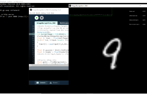

Since late 2020, with the help of the great Daniel Shiffman aka "the coding train",
I've been experimenting with trying to make an image recognition neural network from scratch,
with no keras, pytorch or anything.
Unlike most networks built
now, I had to do the matrix
multiplication by
hand (matrixmultiplication.xyz) because I wanted to experiance the nitty gritty nature of a network.

Getting a 10ish percent
error rate on MNST data with fairly minimal training.
This network's original design was heavily "inspired" by Daniel
Shiffman's toy neural network, although once I got further along I definately was sailing on my own. This is an interesting first ML project considering we live in the age of python libaries that produce incredibly advanced nets with 5 lines of code.